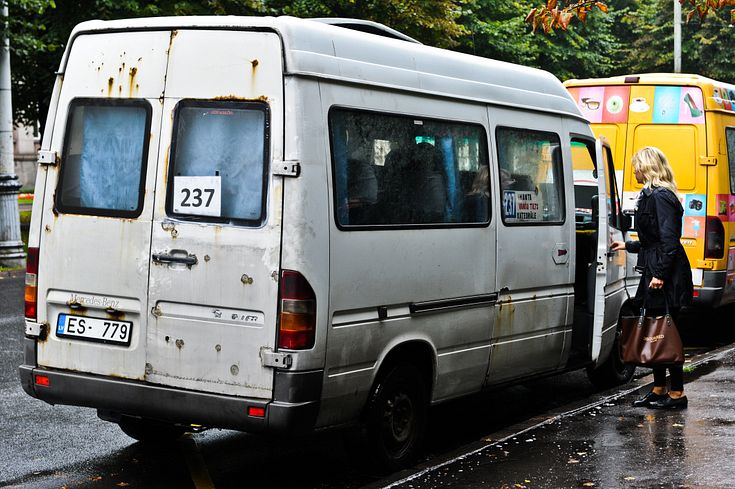

Eduārds (47) meklē sievu. Nedzer (būtu dzeris, viņš pie mums
nestrādātu), nepīpē, sporto. Zvanīt uz 67088887 (Vecmīlgrāvja d/p) vai
67045622 (Juglas d/p). Parasti var satikt 29.autobusā.
RMS nebus

sakara ar to kad RMS paszvanija mums teica kad vinja vairak nesstradaas
mikrinji nekurses jo navdas nau ajajaj bankroc mees vinjiem zvaniijam at
pakalj bet vinji trupku necelj padlas
te vot vidiks par shito
nu vot marshrutnieki nau i vot nebuus bet mes noleemam kad divi
marshruti paliks (tas kas fotkaa nee tochna nebuus absolu):
vecnr.
nosavkums
jaunnr.
piesiimes
263
šAMPēTERIS - mEžSIEMC
63
bravks tapat kad bij agraak
203
pļAUNIEKI - jUGLA
33
vot pljafnekos vinjsh nu nebravks tur kur makjiits bet lids
pat maskachkaj ajsvedis